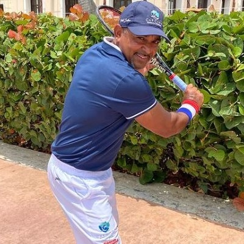

Head Professional Coach
Name: Alberto Pichardo
Biography: Alberto has over 30 years of experience coaching professional and amateur tennis players. Alberto is passionate about developing players’ technical and strategic skills while fostering a love for the game.
As a professional player, he still competing in ITF International Master Tournaments. Alberto recently won a pretigious Copa Mastrolili, a competative ITF International Tennis Tournament.